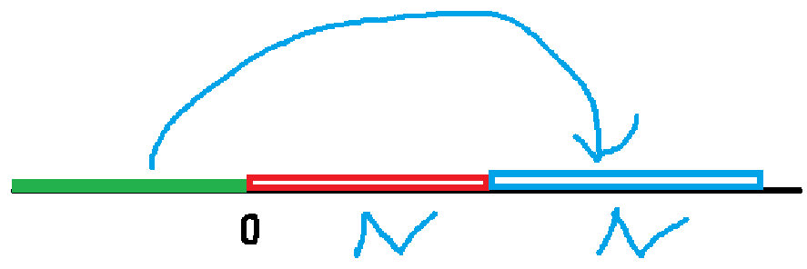
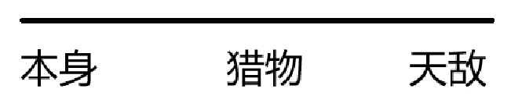
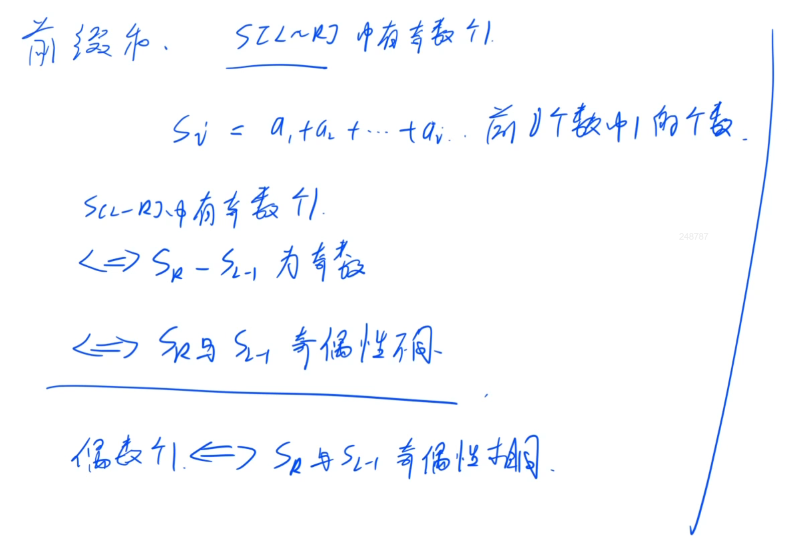
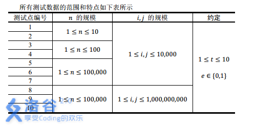
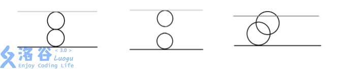

如题，现在有一个并查集，你需要完成合并和查询操作。
第一行包含两个整数
接下来
当
当 Y ；否则输出 N 。
对于每一个 Y 或者 N 。
14 722 1 231 1 242 1 251 3 462 1 471 2 382 1 4
xxxxxxxxxx41N2Y3N4Y
对于
对于
对于
x1
3using namespace std;4const int N = 1e4 + 10;5
6int s[N];7int n, m;8
9int find(int x) {10 if (s[x] != x) s[x] = find(s[x]);11 return s[x];12}13
14int main() {15 cin >> n >> m;16 for (int i = 1; i <= n; i++) s[i] = i;17
18 while (m--) {19 int a, b, c;20 cin >> a >> b >> c;21
22 if (a == 1) {23 s[find(b)] = find(c);24 } else {25 if (find(b) == find(c)) puts("Y");26 else puts("N");27 }28 }29
30 return 0;31}
若某个家族人员过于庞大，要判断两个是否是亲戚，确实还很不容易，现在给出某个亲戚关系图，求任意给出的两个人是否具有亲戚关系。
规定：
第一行：三个整数
以下
接下来
Yes 或 No。表示第
xxxxxxxxxx916 5 321 231 543 455 261 371 482 395 6
xxxxxxxxxx31Yes2Yes3No
xxxxxxxxxx321
3using namespace std;4const int N = 5050;5
6int s[N];7int n, m, p;8
9int find(int x) {10 if (s[x] != x) s[x] = find(s[x]);11 return s[x];12}13
14int main() {15 cin >> n >> m >> p;16 for (int i = 1; i <= n; i++) s[i] = i;17
18 while (m--) {19 int a, b;20 cin >> a >> b;21 s[find(b)] = find(a);22 }23
24 while (p--) {25 int b, c;26 cin >> b >> c;27 if (find(b) == find(c)) puts("Yes");28 else puts("No");29 }30
31 return 0;32}
在一大堆秀恩爱的 ** 之中，来不及秀恩爱的苏大学神踏着坚定（？）的步伐走向了
可是苏大学神需要热身，不然跑到一半就会抽（筋）、于是他就找到了你。。。如果你帮助体育老师解决了问题，老师就会给你
假设一共有
老师会告诉你这
接着会告诉你
如果学生 A 与学生 B 在同一组里，学生 B 与学生 C 也在同一组里，就说明学生 A 与学生 C 在同一组。
然后老师会问你
若是则输出 Yes.，否则输出 No.。
第一行输入
接下来
再往下
再来输入
接下来输入
对于每一个体育老师的询问，输出 Yes. 或 No.。
xxxxxxxxxx21110 62Jack3Mike4ASDA5Michel6brabrabra7HeHe8HeHE9papapa10HeY11Obama12Jack Obama13HeHe HeHE14brabrabra HeHe15Obama ASDA16papapa Obama17Obama HeHE18319Mike Obama20HeHE Jack21papapa brabrabra
xxxxxxxxxx31No.2Yes.3Yes.
xxxxxxxxxx431
3using namespace std;4const int N = 2e4 + 10, mod = 13331;5
6int s[N];7int n, m;8map<string, int> h;9
10int find(int x) {11 if (s[x] != x) s[x] = find(s[x]);12 return s[x];13}14
15int main() {16 cin >> n >> m;17
18 for (int i = 1; i <= n; i++) {19 string y;20 cin >> y;21 h.insert({y, i});22 s[i] = i;23 }24
25 while (m--) {26 string y, t;27 cin >> y >> t;28
29 s[find(h[y])] = find(h[t]);30 }31
32 int p;33 cin >> p;34 while (p--) {35 string y, t;36 cin >> y >> t;37
38 if (find(h[y]) == find(h[t])) puts("Yes.");39 else puts("No.");40 }41
42 return 0;43} 题目背景和题目描述非常直接地告诉我们：
这就是个并查集模板，只不过改成了字符串
因此我们的问题就成了如何处理字符串
当然，可以用结构体，结构体的成员包含编号和名字
但是，还有一个更好用的东西：STL中的 map
直接建立一个由字符串到字符串的映射代替数组
然后把并查集的模板粘上去改一改就成了
什么是并查集？并查集，是用来求两者是否同属一个单位的一种思路。同时可以利用并查集来维护一些额外的信息。
并查集，在一些有N个元素的集合应用问题中，我们通常是在开始时让每个元素构成一个单元素的集合，然后按一定顺序将属于同一组的元素所在的集合合并，其间要反复查找一个元素在哪个集合中。这一类问题近几年来反复出现在信息学的国际国内赛题中，其特点是看似并不复杂，但数据量极大，若用正常的数据结构来描述的话，往往在空间上过大，计算机无法承受；即使在空间上勉强通过，运行的时间复杂度也极高，根本就不可能在比赛规定的运行时间（1～3秒）内计算出试题需要的结果，只能用并查集来描述。
并查集是一种树型的数据结构，用于处理一些不相交集合（Disjoint Sets）的合并及查询问题。常常在使用中以森林来表示。 —百度百科
现代的人对于本家族血统越来越感兴趣。
给出充足的父子关系，请你编写程序找到某个人的最早的祖先。
输入由多行组成，首先是一系列有关父子关系的描述，其中每一组父子关系中父亲只有一行，儿子可能有若干行，用 #name 的形式描写一组父子关系中的父亲的名字，用 +name 的形式描写一组父子关系中的儿子的名字；接下来用 ?name 的形式表示要求该人的最早的祖先；最后用单独的一个 $ 表示文件结束。
按照输入文件的要求顺序，求出每一个要找祖先的人的祖先，格式为：本人的名字
xxxxxxxxxx121#George2+Rodney3#Arthur4+Gareth5+Walter6#Gareth7+Edward8?Edward9?Walter10?Rodney11?Arthur12$
xxxxxxxxxx41Edward Arthur2Walter Arthur3Rodney George4Arthur Arthur
规定每个人的名字都有且只有
xxxxxxxxxx431
3using namespace std;4const int N = 5e4 + 10;5
6int s[N];7map<string, int> h;8
9int find(int x) {10 if (s[x] != x) s[x] = find(s[x]);11 return s[x];12}13
14int main() {15 for (int i = 1; i < N; i++) s[i] = i;16 int i = 1;17 string sonname, faname;18 char w;19 while (1) {20 cin >> w;21 if (w == '$') break;22 if (w == '#') {23 cin >> faname;24 if (h.find(faname) == h.end()) h[faname] = i++;25
26 } else if (w == '+') {27 cin >> sonname;28 if (h.find(sonname) == h.end()) h[sonname] = i++;29 s[find(h[sonname])] = find(h[faname]);30 } else {31 string q;32 cin >> q;33 cout << q << " ";34 for (auto t: h) {35 if (t.second == find(h[q])) {36 cout << t.first << endl;37 break;38 }39 }40 }41 }42 return 0;43}
这个题提醒我一定不要忘记初始化 s 数组
xxxxxxxxxx11for (int i = 1; i < N; i++) s[i] = i;不然后面的语句
xxxxxxxxxx11s[find(h[sonname])] = find(h[faname]);毫无意义，只是在不断赋值0 罢了
另外一种仅仅使用 Map ，不需要转化成序号的做法
太妙了，非常值得学习
xxxxxxxxxx301
5using namespace std;6map<string, string> p;7
8string find(string x) {9 if (x != p[x]) p[x] = find(p[x]);10 return p[x];11}12
13string s, s1;14
15int main() {16 char ch;17 cin >> ch;18 while (ch != '$') {19 cin >> s;20 if (ch == '#') {21 s1 = s;22 if (p[s] == "") p[s] = s;23 } else if (ch == '+') p[s] = s1;24 else25 cout << s << ' ' << find(s) << endl;26
27 cin >> ch;28 }29 return 0;30}
公元
宇宙历
杨威利擅长排兵布阵，巧妙运用各种战术屡次以少胜多，难免恣生骄气。在这次决战中，他将巴米利恩星域战场划分成 M i j，含义为第
然而，老谋深算的莱因哈特早已在战略上取得了主动。在交战中，他可以通过庞大的情报网络随时监听杨威利的舰队调动指令。
在杨威利发布指令调动舰队的同时，莱因哈特为了及时了解当前杨威利的战舰分布情况，也会发出一些询问指令：C i j。该指令意思是，询问电脑，杨威利的第
作为一个资深的高级程序设计员，你被要求编写程序分析杨威利的指令，以及回答莱因哈特的询问。
第一行有一个整数
以下有
M i j：
C i j：
依次对输入的每一条指令进行分析和处理：
如果是杨威利发布的舰队调动指令，则表示舰队排列发生了变化，你的程序要注意到这一点，但是不要输出任何信息。
如果是莱因哈特发布的询问指令，你的程序要输出一行，仅包含一个整数，表示在同一列上，第
xxxxxxxxxx5142M 2 33C 1 24M 2 45C 4 2
xxxxxxxxxx21-121
战舰位置图：表格中阿拉伯数字表示战舰编号。
带权并查集
xxxxxxxxxx371
3using namespace std;4const int N = 30010;5int n, t, p[N], d[N], sz[N]; //根节点到根节点的距离d数组6
7int find(int x) {8 if (p[x] != x) {9 int rt = find(p[x]);10 d[x] += d[p[x]];11 p[x] = rt;12 }13 return p[x];14}15
16int main() {17 n = 30010;18 for (int i = 1; i <= n; ++i) p[i] = i, sz[i] = 1;19 cin >> t;20 while (t--) {21 char op[2];22 int a, b;23 scanf("%s%d%d", op, &a, &b);24 int ra = find(a), rb = find(b);25 if (op[0] == 'M') {26 if (ra != rb) {27 d[ra] += sz[rb];28 sz[rb] += sz[ra];29 p[ra] = rb;30 }31 } else {32 if (ra != rb) puts("-1");33 else printf("%d\n", max(0, abs(d[a] - d[b]) - 1));34 }35 }36 return 0;37}
A 地区在地震过后，连接所有村庄的公路都造成了损坏而无法通车。政府派人修复这些公路。
给出 A 地区的村庄数
第
下面
如果全部公路修复完毕仍然存在两个村庄无法通车，则输出
xxxxxxxxxx514 421 2 631 3 441 4 554 2 3
xxxxxxxxxx115
xxxxxxxxxx381
3using namespace std;4const int N = 1010, M = 1e5 + 10;5int n, m, p[N];6
7struct node {8 int x, y, t;9
10 bool operator<(const node &g) const {11 return t < g.t;12 }13} s[M];14
15int find(int x) {16 if (p[x] != x) p[x] = find(p[x]);17 return p[x];18}19
20int main() {21 cin >> n >> m;22 for (int i = 0; i < m; ++i) {23 cin >> s[i].x >> s[i].y >> s[i].t;24 }25 sort(s, s + m);26 int sum = n;27 int ans = 0;28 for (int i = 1; i <= n; ++i) p[i] = i;29 for (int i = 0; i < m; ++i) {30 if (find(s[i].x) == find(s[i].y)) continue;31 sum--;32 ans = s[i].t;33 p[find(s[i].x)] = find(s[i].y);34 }35 if (sum == 1) cout << ans << endl;36 else cout << -1 << endl;37 return 0;38}
小明在 A 公司工作，小红在 B 公司工作。
这两个公司的员工有一个特点：一个公司的员工都是同性。
A 公司有
每对朋友关系用两个整数
大家都知道，小明和小红是朋友，那么，请你写一个程序求出两公司之间，通过小明和小红认识的人最多一共能配成多少对情侣（包括他们自己）。
输入的第一行，包含
之后
之后
输出一行一个正整数，表示通过小明和小红认识的人最多一共能配成多少对情侣（包括他们自己）。
xxxxxxxxxx714 3 4 221 131 242 351 36-1 -27-3 -3
xxxxxxxxxx112
对于
对于
对于
扩展域并查集

xxxxxxxxxx401
3using namespace std;4const int N = 1e4 + 10;5int n, m, pp, q, p[N * 2];6
7int find(int x) {8 if (p[x] != x) p[x] = find(p[x]);9 return p[x];10}11
12int main() {13 cin >> n >> m >> pp >> q;14 for (int i = 1; i <= N * 2 - 1; ++i) p[i] = i;15 p[1] = find(N * 2 - 1);16 for (int i = 0; i < pp; ++i) {17 int x, y;18 cin >> x >> y;19 if (x < 0) x += N * 2;20 if (y < 0) y += N * 2;21 p[find(x)] = find(y);22 }23
24 for (int i = 0; i < q; ++i) {25 int x, y;26 cin >> x >> y;27 if (x < 0) x += N * 2;28 if (y < 0) y += N * 2;29 p[find(x)] = find(y);30 }31 int man = 0, woman = 0;32 for (int i = 1; i <= N; ++i) {33 if (p[find(i)] == p[find(1)]) man++;34 }35 for (int i = N; i <= N * 2 - 1; ++i) {36 if (p[find(i)] == p[find(N * 2 - 1)]) woman++;37 }38 cout << min(man, woman) << endl;39 return 0;40}
现在有
一个人的朋友的朋友是朋友
一个人的敌人的敌人是朋友
现在要对这些人进行组团。两个人在一个团体内当且仅当这两个人是朋友。请求出这些人中最多可能有的团体数。
第一行输入一个整数
第二行输入一个整数
接下来
如果 F，则表明
如果 E，则表明
一行一个整数代表最多的团体数。
xxxxxxxxxx616243E 1 44F 3 55F 4 66E 1 2
xxxxxxxxxx113
对于
扩展域并查集
xxxxxxxxxx311
3using namespace std;4typedef pair<int, int> PII;5const int N = 2010;6int n, p[N], m;7
8int find(int x) {9 if (p[x] != x) p[x] = find(p[x]);10 return p[x];11}12
13int main() {14 cin >> n >> m;15 for (int i = 0; i <= 2 * n; ++i) p[i] = i;16 while (m--) {17 string s;18 int a, b;19 cin >> s >> a >> b;20 if (s == "E") {21 p[find(a + n)] = find(b);22 p[find(b + n)] = find(a);23 } else {24 p[find(a)] = find(b);25 }26 }27 int cnt = 0;28 for (int i = 1; i <= n; ++i) if (p[i] == i) cnt++;29 cout << cnt;30 return 0;31} 本质是拓展域并查集，注意一定要和实际意义紧密贴合，具体看注释
动物王国中有三类动物
现有
有人用两种说法对这
第一种说法是 1 X Y，表示
第二种说法是2 X Y，表示
此人对
当前的话与前面的某些真的话冲突，就是假话；
当前的话中
当前的话表示
你的任务是根据给定的
第一行两个整数，
第二行开始每行一句话（按照题目要求，见样例）
一行，一个整数，表示假话的总数。
xxxxxxxxxx81100 721 101 132 1 242 2 352 3 361 1 372 3 181 5 5
xxxxxxxxxx113
对于全部数据，
扩展域并查集

xxxxxxxxxx531
3using namespace std;4const int N = 5e4 + 10;5int n, k, p[N * 3];6
7int find(int x) {8 if (p[x] != x) p[x] = find(p[x]);9 return p[x];10}11
12bool same(int x, int y) {13 return find(x) == find(y);14}15
16void uni(int x, int y) {17 int xx = find(x);18 int yy = find(y);19 if (xx != yy) p[xx] = yy;20}21
22int main() {23 cin >> n >> k;24 for (int i = 1; i <= n * 3; ++i) p[i] = i;25 int cnt = 0;26 while (k--) {27 int d, x, y;28 scanf("%d%d%d", &d, &x, &y);29 if (x > n || y > n) {30 cnt++;31 continue;32 }33 if (d == 1) {34 if (same(x, y + n) || same(x, y + 2 * n)) {35 cnt++;36 continue;37 }38 uni(x, y);39 uni(x + n, y + n);40 uni(x + 2 * n, y + 2 * n);41 } else {42 if (same(x, y) || same(x, y + n)) {43 cnt++;44 continue;45 }46 uni(x, y + 2 * n);47 uni(x + n, y);48 uni(x + 2 * n, y + n);49 }50 }51 cout << cnt;52 return 0;53}
某市调查城镇交通状况，得到现有城镇道路统计表。表中列出了每条道路直接连通的城镇。市政府 "村村通工程" 的目标是使全市任何两个城镇间都可以实现交通（但不一定有直接的道路相连，只要相互之间可达即可）。请你计算出最少还需要建设多少条道路？
输入包含若干组测试数据，每组测试数据的第一行给出两个用空格隔开的正整数，分别是城镇数目
注意：两个城市间可以有多条道路相通。
在输入数据的最后，为一行一个整数
对于每组数据，对应一行一个整数。表示最少还需要建设的道路数目。
xxxxxxxxxx1214 221 334 343 351 261 372 385 291 2103 511999 0120
xxxxxxxxxx41120324998
对于
xxxxxxxxxx301
3using namespace std;4const int N = 1010;5int s[N];6
7int find(int x) {8 if (s[x] != x) s[x] = find(s[x]);9 return s[x];10}11
12int main() {13 while (1) {14 int n, m;15 cin >> n >> m;16 if (!n) break;17 for (int i = 1; i <= n; ++i) s[i] = i;18
19 int a, b;20 for (int k = 0; k < m; ++k) {21 scanf("%d%d", &a, &b);22 s[find(a)] = find(b);23 }24
25 int res = 0;26 for (int i = 1; i <= n; ++i) if (s[i] == i) res++;27 cout << res - 1 << endl;28 }29 return 0;30}就是寻找有多少个连通图，答案就是连通图的数量减去一。
Alice 和 Bob 在玩一个游戏：他写一个由
第
第
第 odd表示有奇数个 even 表示有偶数个
输出一行，一个数
xxxxxxxxxx71102531 2 even43 4 odd55 6 even61 6 even77 10 odd
xxxxxxxxxx113
对于
扩展域并查集加上了离散化
xxxxxxxxxx511
3using namespace std;4const int N = 40010, Base = N / 2;5
6int n, m;7int p[N];8unordered_map<int, int> S;9
10int get(int x) {11 if (S.count(x) == 0) S[x] = ++n;12 return S[x];13}14
15int find(int x) {16 if (p[x] != x) p[x] = find(p[x]);17 return p[x];18}19
20int main() {21 cin >> n >> m;22 n = 0;23
24 for (int i = 0; i < N; i++) p[i] = i;25
26 int res = m;27 for (int i = 1; i <= m; i++) {28 int a, b;29 string type;30 cin >> a >> b >> type;31 a = get(a - 1), b = get(b);32
33 if (type == "even") {34 if (find(a + Base) == find(b)) {35 res = i - 1;36 break;37 }38 p[find(a)] = find(b);39 p[find(a + Base)] = find(b + Base);40 } else {41 if (find(a) == find(b)) {42 res = i - 1;43 break;44 }45 p[find(a + Base)] = find(b);46 p[find(a)] = find(b + Base);47 }48 }49 cout << res << endl;50 return 0;51}
明天就是母亲节了，电脑组的小朋友们在忙碌的课业之余挖空心思想着该送什么礼物来表达自己的心意呢？听说在某个网站上有卖云朵的，小朋友们决定一同前往去看看这种神奇的商品，这个店里有
第一行输入三个整数，
第二行至
第
一行，表示可以获得的最大价值。
xxxxxxxxxx915 3 1023 1033 1043 1055 100610 171 383 294 2
xxxxxxxxxx111
对于
对于
对于
xxxxxxxxxx361
3using namespace std;4const int N = 10010;5int n, m, vol, p[N], f[N], v[N], w[N];6
7int find(int x) {8 if (p[x] != x) p[x] = find(p[x]);9 return p[x];10}11
12int main() {13 cin >> n >> m >> vol;14 for (int i = 0; i <= n; ++i) p[i] = i;15 for (int i = 1; i <= n; ++i) cin >> v[i] >> w[i];16 while (m--) {17 int a, b;18 cin >> a >> b;19 int pa = find(a), pb = find(b);20 if (pa != pb) {21 v[pb] += v[pa];22 w[pb] += w[pa];23 p[pa] = pb;24 }25 }26
27 for (int i = 1; i <= n; ++i) {28 if (p[i] == i) {29 for (int j = vol; j >= v[i]; --j) {30 f[j] = max(f[j], f[j - v[i]] + w[i]);31 }32 }33 }34 cout << f[vol] << endl;35 return 0;36}我的第一印象：01背包。
商店老板告诉我们买一朵云则与这朵云有搭配的云都要买。由此，我们可以想到另一个算法：并查集。
在实现程序自动分析的过程中，常常需要判定一些约束条件是否能被同时满足。
考虑一个约束满足问题的简化版本：假设
现在给出一些约束满足问题，请分别对它们进行判定。
输入的第一行包含一个正整数
对于每个问题，包含若干行：
第一行包含一个正整数
输出包括
输出文件的第 YES 或者 NO（字母全部大写），YES 表示输入中的第 NO 表示不可被满足。
xxxxxxxxxx7122231 2 141 2 05261 2 172 1 1
xxxxxxxxxx21NO2YES
xxxxxxxxxx10122331 2 142 3 153 1 16471 2 182 3 193 4 1101 4 0
xxxxxxxxxx21YES2NO
【样例解释1】
在第一个问题中，约束条件为：
在第二个问题中，约束条件为：
【样例说明2】
在第一个问题中，约束条件有三个：
在第二个问题中，约束条件有四个：
【数据范围】

注：实际上
xxxxxxxxxx611
3using namespace std;4const int N = 200010;5int n, m;6int p[N];7unordered_map<int, int> S;8
9struct Query {10 int x, y, e;11} query[N];12
13int get(int x) {14 if (S.count(x) == 0) S[x] = ++n;15 return S[x];16}17
18int find(int x) {19 if (p[x] != x) p[x] = find(p[x]);20 return p[x];21}22
23int main() {24 int T;25 scanf("%d", &T);26 while (T--) {27 n = 0;28 S.clear();29 scanf("%d", &m);30 for (int i = 0; i < m; i++) {31 int x, y, e;32 scanf("%d%d%d", &x, &y, &e);33 query[i] = {get(x), get(y), e};// 离散化34 }35
36 for (int i = 1; i <= n; i++) p[i] = i;37
38 // 合并所有相等约束条件39 for (int i = 0; i < m; i++)40 if (query[i].e == 1) {41 int pa = find(query[i].x), pb = find(query[i].y);42 p[pa] = pb;43 }44
45 // 检查所有不等条件46 bool has_conflict = false;47 for (int i = 0; i < m; i++)48 if (query[i].e == 0) {49 int pa = find(query[i].x), pb = find(query[i].y);50 if (pa == pb) {51 has_conflict = true;52 break;53 }54 }55
56 if (has_conflict) puts("NO");57 else puts("YES");58 }59
60 return 0;61}是离散化 + 并查集
先排序，把所有e=1的操作放在前面，然后再进行e=0的操作，在进行e=1的操作的时候，我们只要把它约束的两个变量放在同一个集合里面即可。在e=0，即存在一条不相等的约束条件，对于它约束的两个变量，如果在一个集合里面，那就不可能满足！如不相等的约束条件都满足，那就YES。
因为数据范围过大，所以需要离散化
先合并所有相等约束条件，再检查所有不等条件
unordered_map是一个将key和value关联起来的容器，它可以高效的根据单个key值查找对应的value。
key值应该是唯一的，key和value的数据类型可以不相同。
unordered_map存储元素时是没有顺序的，只是根据key的哈希值，将元素存在指定位置，所以根据key查找单个value时非常高效，平均可以在常数时间内完成。
unordered_map查询单个key的时候效率比map高，但是要查询某一范围内的key值时比map效率低。
可以使用[]操作符来访问key值对应的value值。
unordered_map的简单使用
xxxxxxxxxx161std::unordered_map<std::string, std::int> umap; //定义2
3umap.insert(Map::value_type("test", 1));//增加4
5//根据key删除,如果没找到n=06auto n = umap.erase("test") //删除7
8auto it = umap.find(key) //改9if(it != umap.end()) 10 it->second = new_value; 11
12
13//map中查找x是否存在14umap.find(x) != map.end()//查15//或者16umap.count(x) != 0
小明正在做一个网络实验。
他设置了
初始时，所有节点都是独立的，不存在任何连接。
小明可以通过网线将两个节点连接起来，连接后两个节点就可以互相通信了。两个节点如果存在网线连接，称为相邻。
小明有时会测试当时的网络，他会在某个节点发送一条信息，信息会发送到每个相邻的节点，之后这些节点又会转发到自己相邻的节点，直到所有直接或间接相邻的节点都收到了信息。所有发送和接收的节点都会将信息存储下来。一条信息只存储一次。
给出小明连接和测试的过程，请计算出每个节点存储信息的大小。
输入的第一行包含两个整数
如果操作为 1 a b，表示将节点
如果操作为 2 p t，表示在节点
输出一行，包含
xxxxxxxxxx914 821 1 232 1 1042 3 551 4 162 2 271 1 281 2 492 2 1
xxxxxxxxxx1113 13 5 3
对于
对于
对于
对于所有评测用例，
蓝桥杯 2020 第一轮省赛 A 组 J 题（B 组 J 题）。
xxxxxxxxxx411
5using namespace std;6
7const int N = 10010;8
9int n, m;10int p[N], d[N];11
12int find(int x) {13 if (p[x] == x || p[p[x]] == p[x]) return p[x];14 int r = find(p[x]);15 d[x] += d[p[x]];16 p[x] = r;17 return r;18}19
20int main() {21 scanf("%d%d", &n, &m);22 for (int i = 1; i <= n; i++) p[i] = i;23 while (m--) {24 int t, a, b;25 scanf("%d%d%d", &t, &a, &b);26 if (t == 1) {27 a = find(a), b = find(b);28 if (a != b) {29 d[a] -= d[b];30 p[a] = b;31 }32 } else {33 a = find(a);34 d[a] += b;35 }36 }37 for (int i = 1; i <= n; i++)38 if (i == find(i)) printf("%d ", d[i]);39 else printf("%d ", d[i] + d[find(i)]);40 return 0;41}这道题非常妙 ！！！
注意这里：
xxxxxxxxxx31for (int i = 1; i <= n; i++)2 if (i == find(i)) printf("%d ", d[i]);3 else printf("%d ", d[i] + d[find(i)]);在执行完find(i)之后，其实每个路径上只有两个点了，所以输出d[i] + d[find(i)]
A 国派出将军 uim，对 B 国进行战略性措施，以解救涂炭的生灵。
B 国有
uim 发现有些铁路被毁坏之后，某两个城市无法互相通过铁路到达。这样的铁路就被称为 key road。
uim 为了尽快使该国的物流系统瘫痪，希望炸毁铁路，以达到存在某两个城市无法互相通过铁路到达的效果。
然而，只有一发炮弹（A 国国会不给钱了）。所以，他能轰炸哪一条铁路呢？
第一行
以下
输出有若干行。
每行包含两个数字
请注意：输出时，所有的数对
xxxxxxxxxx716 621 232 342 453 564 575 6
xxxxxxxxxx211 225 6
xxxxxxxxxx571
3using namespace std;4const int N = 5050;5int n, m, p[N];6
7struct node {8 int l, r;9
10 bool operator<(const node &w) const {11 if (l == w.l) return r < w.r;12 else return l < w.l;13 }14} s[N];15
16int find(int x) {17 if (p[x] != x) p[x] = find(p[x]);18 return p[x];19}20
21void ii() {22 for (int i = 1; i <= n; ++i) p[i] = i;23}24
25int check() {26 int ans = 0;27 for (int i = 1; i <= n; ++i) {28 if (p[i] == i) ans++;29 }30 return ans;31}32
33int main() {34 cin >> n >> m;35 for (int i = 0; i < m; ++i) {36 cin >> s[i].l >> s[i].r;37
38 }39 sort(s, s + m);40 ii();41 for (int i = 0; i < m; ++i) {42 p[find(s[i].l)] = find(s[i].r);43 }44 int t = check();45 for (int i = 0; i < m; ++i) {46 ii();47 for (int j = 0; j < m; ++j) {48 if (j != i) {49 p[find(s[j].l)] = find(s[j].r);50 }51 }52 if (check() > t) {53 cout << min(s[i].l, s[i].r) << " " << max(s[i].l, s[i].r) << endl;54 }55 }56 return 0;57} 此题可用并查集求解
因为并查集可用来快速判断图中的任意两点之间是否连通
思路：枚举每条边，删去这条边后将其余边的所有节点加入并查集，判断此时图是否连通，如果不连通，则此边满足题意
过程中注意初始化
很久以前，在一个遥远的星系，一个黑暗的帝国靠着它的超级武器统治着整个星系。
某一天，凭着一个偶然的机遇，一支反抗军摧毁了帝国的超级武器，并攻下了星系中几乎所有的星球。这些星球通过特殊的以太隧道互相直接或间接地连接。
但好景不长，很快帝国又重新造出了他的超级武器。凭借这超级武器的力量，帝国开始有计划地摧毁反抗军占领的星球。由于星球的不断被摧毁，两个星球之间的通讯通道也开始不可靠起来。
现在，反抗军首领交给你一个任务：给出原来两个星球之间的以太隧道连通情况以及帝国打击的星球顺序，以尽量快的速度求出每一次打击之后反抗军占据的星球的连通块的个数。（如果两个星球可以通过现存的以太通道直接或间接地连通，则这两个星球在同一个连通块中）。
输入文件第一行包含两个整数，
接下来的
接下来的一行为一个整数
接下来的
第一行是开始时星球的连通块个数。接下来的
xxxxxxxxxx2018 1320 131 646 555 060 671 282 393 4104 5117 1127 2137 6143 6155161176183195207
xxxxxxxxxx6112131425363
【数据范围】
对于
[JSOI2008]
自己思考的一个答案，但是只得20分，其余时间超限
xxxxxxxxxx671
3using namespace std;4
5const int N = 4e5 + 10;6int n, m, k, p[N];7typedef pair<int, int> PII;8set<PII> d;// 表示存在的连接9set<int> num;// 被轰炸的点10stack<int> q;// 依次取出被轰炸的点11stack<int> ans;12
13int find(int x) {14 if (p[x] != x) p[x] = find(p[x]);15 return p[x];16}17
18int main() {19 cin >> n >> m;20 for (int i = 1; i <= n; ++i) p[i] = i;21 for (int i = 0; i < m; ++i) {22 int a, b;23 cin >> a >> b;24 a++;25 b++;26 d.insert({a, b});27 }28 cin >> k;29 for (int i = 0; i < k; ++i) {30 int a;31 cin >> a;32 a++;33 q.push(a);34 num.insert(a);35 }36
37 while (q.size()) {38 set<PII> temp = d;39 for (auto t: temp) {40 if (num.find(t.first) == num.end() && num.find(t.second) == num.end()) {41 p[find(t.first)] = find(t.second);42 d.erase(t);43 }44 }45 int res = 0;46 for (int i = 1; i <= n; ++i) if (num.find(i) == num.end() && p[i] == i) res++;47 ans.push(res);48
49 num.erase(q.top());50 q.pop();51 }52
53 set<PII> temp = d;54 for (auto t: temp) {55 p[find(t.first)] = find(t.second);56 }57 int res = 0;58 for (int i = 1; i <= n; ++i) if (p[i] == i) res++;59 ans.push(res);60
61 while (!ans.empty()) {62 cout << ans.top() << endl;63 ans.pop();64 }65
66 return 0;67}结果改良之后，优化掉了利用for循环查找联通块的操作，直接用一个变量tot维护联通块，但是依旧TLE。
xxxxxxxxxx681
3using namespace std;4
5const int N = 4e5 + 10;6int n, m, k, p[N];7typedef pair<int, int> PII;8set<PII> d;// 表示存在的连接9set<int> num;// 被轰炸的点10stack<int> q;// 依次取出被轰炸的点11stack<int> ans;12
13int find(int x) {14 if (p[x] != x) p[x] = find(p[x]);15 return p[x];16}17
18int main() {19 cin >> n >> m;20 for (int i = 1; i <= n; ++i) p[i] = i;21 for (int i = 0; i < m; ++i) {22 int a, b;23 cin >> a >> b;24 a++;25 b++;26 d.insert({a, b});27 }28 cin >> k;29 for (int i = 0; i < k; ++i) {30 int a;31 cin >> a;32 a++;33 q.push(a);34 num.insert(a);35 }36 int tot = n - k;37 while (!q.empty()) {38 set<PII> temp = d;39 for (auto t: temp) {40 if (num.find(t.first) == num.end() && num.find(t.second) == num.end()) {41 if (find(t.first) != find(t.second)) {42 tot--;43 }44 p[find(t.first)] = find(t.second);45 d.erase(t);46 }47 }48 ans.push(tot);49
50 num.erase(q.top());51 q.pop();52 tot++;53 }54
55 set<PII> temp = d;56 for (auto t: temp) {57 if (find(t.first) != find(t.second)) {58 tot--;59 }60 p[find(t.first)] = find(t.second);61 }62 ans.push(tot);63 while (!ans.empty()) {64 cout << ans.top() << endl;65 ans.pop();66 }67 return 0;68}查看别人的题解之后受到了不小的启发。
可以建立一个图来存储点和点之间的连通关系（这也加深了我对图的应用的理解）
AC代码
xxxxxxxxxx761
3using namespace std;4
5const int N = 4e5 + 10;6int n, m, k, p[N], idx, h[N], ne[N], e[N];7int d[N];8bool st[N];9stack<int> s;10
11int find(int x) {12 if (p[x] != x) p[x] = find(p[x]);13 return p[x];14}15
16void add(int a, int b) {17 e[idx] = b;18 ne[idx] = h[a];19 h[a] = idx++;20}21
22int main() {23 cin >> n >> m;24 for (int i = 1; i <= n; ++i) p[i] = i;25 memset(h, -1, sizeof h);26 for (int i = 0; i < m; ++i) {27 int a, b;28 cin >> a >> b;29 a++;30 b++;31 add(a, b);32 add(b, a);33 }34 cin >> k;35 for (int i = 0; i < k; ++i) {36 cin >> d[i];37 d[i]++;38 st[d[i]] = true;39 }40 int tot = n - k;41 for (int i = 1; i <= n; ++i) {42 if (!st[i]) {43 for (int t = h[i]; ~t; t = ne[t]) {44 int j = e[t];45 if (!st[j]) {46 if (find(j) != find(i)) {47 tot--;48 p[find(j)] = find(i);49 }50 }51 }52 }53 }54 s.push(tot);55 for (int i = k - 1; i >= 0; --i) {56 st[d[i]] = false;57 tot++;58 int last = d[i];59 for (int j = h[d[i]]; ~j; j = ne[j]) {60 int t = e[j];61 if (!st[t]) {62 if (find(t) != find(last)) {63 tot--;64 p[find(t)] = find(last);65 }66 last = t;67 }68 }69 s.push(tot);70 }71 while (!s.empty()) {72 cout << s.top() << endl;73 s.pop();74 }75 return 0;76}注意维护tot，st，for循环中的循环遍变量
set、multiset、map、multimap 特点：底层实现是红黑树，键值有序，set 和 map 键不可重复，而 multiset 和 multimap 可重复； 复杂度：插入、删除、查找都为O(logN)；
unordered_set，unordered_map，unordered_multiset，unordered_multimap 特点：底层实现是哈希表，键值无序，unordered_set 和 unordered_map 键不可重复，而另外两个可以重复； 复杂度：插入、删除、查找平均为O(1)，最坏为O(N)，空间换时间；
vector 特点：底层实现是数组，动态成倍扩容； 复杂度： 插入：push_back()，O(1)；insert()，O(N) 删除：pop_back()，O(1)；erase()，O(N) 查找：O(1)
list 特点：底层实现双向链表； 复杂度： 插入：push_front()，O(1)；push_back()，O(1)；insert()，O(1) 删除：pop_front()，O(1)；pop_back()，O(1)；erase()，O(1) 查找：O(N)
deque 双端队列 特点：底层是分段连续的线性空间，它是一种具有队列和栈的性质的数据结构，其插入和删除操作限定在两端进行； 复杂度： 插入：push_front()，O(1)；push_back()，O(1)；insert()，O(N) 删除：pop_front()，O(1)；pop_back()，O(1)；erase()，O(N) 查找：O(1)
stack 栈 特点：底层实现一般用 list 或 deque，封闭头部即可，数据先进后出，不支持随机访问； 复杂度： 插入：push()，O(1) 删除：pop()，O(1) 查找（栈顶）：top()，O(1)
queue 队列 特点：底层实现一般用 list 或 deque，数据先进先出，不支持随机访问； 复杂度： 插入：push()，O(1) 删除：pop()，O(1) 查找（队列头）：front()，O(1)
priority_queue 优先队列 特点：底层用堆实现，队列中各个元素被赋予优先级； 复杂度： 插入：push()，O(logN) 删除：pop()，O(logN) 查找（取堆顶）：top()，O(1)
Byteazar the Dragon 拥有
第一行包括一个整数
存钱罐（包括它们对应的钥匙）从
接下来有
仅一行：包括一个整数，表示能打开所有存钱罐的情况下，需要破坏的存钱罐的最少数量。
xxxxxxxxxx51422314254
xxxxxxxxxx112
并查集+建立关系
xxxxxxxxxx461
3using namespace std;4const int N = 1e6 + 10;5int n, p[N], ans, a[N];6bool st[N];// 打开或者被砸开7
8int find(int x) {9 if (p[x] != x) p[x] = find(p[x]);10 return p[x];11}12
13void dfs(int x) {14 st[x] = true;15 int ne = a[x];16 17 // 成环 18 if (st[ne] && find(x) == find(ne)) {19 return;20 }21
22 // 抢占 23 if (st[ne] && find(x) != find(ne)) {24 p[find(ne)] = find(x);25 return;26 }27
28 // 连接到一条链的头部 29 p[find(ne)] = find(x);30 if (!st[ne]) dfs(ne);31}32
33int main() {34 cin >> n;35 for (int i = 1; i <= n; ++i) p[i] = i;36 for (int i = 1; i <= n; ++i) cin >> a[i];37 for (int i = 1; i <= n; ++i)38 if (p[i] == i) {39 dfs(i);40 }41 for (int i = 1; i <= n; ++i) {42 if (p[i] == i) ans++;43 }44 cout << ans << endl;45 return 0;46}
给定一个长度为
第一行一个整数
第二行
第三行
如果能交换到给定样式，输出 YES，否则输出 NO。
One day
The favourite number of each cell will be given to you. You will also be given a permutation of numbers from
The first line contains positive integer
If the given state is reachable in the described game, output YES, otherwise NO.
xxxxxxxxxx31525 4 3 2 131 1 1 1 1
xxxxxxxxxx11YES
xxxxxxxxxx31724 3 5 1 2 7 634 6 6 1 6 6 1
xxxxxxxxxx11NO
xxxxxxxxxx31724 2 5 1 3 7 634 6 6 1 6 6 1
xxxxxxxxxx11YES
并查集维护关系
xxxxxxxxxx321
3using namespace std;4const int N = 110;5int n, p[N], a[N];6
7int find(int x) {8 if (p[x] != x) p[x] = find(p[x]);9 return p[x];10}11
12int main() {13 cin >> n;14 for (int i = 1; i <= n; ++i) {15 cin >> a[i];16 p[i] = i;17 }18 for (int i = 1; i <= n; ++i) {19 int d;20 cin >> d;21 if (i - d >= 1) p[find(i)] = find(i - d);22 if (i + d <= n) p[find(i)] = find(i + d);23 }24 for (int i = 1; i <= n; ++i) {25 if (find(i) != find(a[i])) {26 cout << "No";27 return 0;28 }29 }30 cout << "Yes";31 return 0;32}我们先证明一个东西：如果有一串数字，每相邻两个数字都可以交换，必然可以得到这组数字的所有全排列。
那么我们总结出一条规律：
那我们不妨把所有能交换的格子排成一列，这样交换过程就变成了与相邻的格子交换，那如果f[i]这个数在这一列中，说明总归可以交换成功。
这样一说，并查集就暴露了吧。
把所有能交换的格子放在一个并查集里，最后检查i和f[i]是否在一个并查集里，这道题就A了！
Farmer John 计划建造
Farmer John 的
请求出每个朋友在拜访过后是否会高兴。
输入的第一行包含两个整数
第二行包含一个长为 G，如果第 H。
以下
以下 G 或 H 之一，表示第
输出一个长为 1，否则为 0。
xxxxxxxxxx1115 52HHGHG31 242 352 461 571 4 H81 4 G91 3 G101 3 H115 5 H
xxxxxxxxxx1110110
在这里，从农场 1 到农场 4 的路径包括农场 1、2 和 4。所有这些农场里都是荷斯坦牛，所以第一个朋友会感到满意，而第二个朋友不会。
关于部分分：
测试点
测试点
对于
供题：Spencer Compton
树+并查集
xxxxxxxxxx541
3using namespace std;4const int N = 1e5 + 10;5int n, m, idx, h[N], ne[N * 2], e[N * 2];6int p[N];7string s;8
9int find(int x) {10 if (p[x] != x) p[x] = find(p[x]);11 return p[x];12}13
14void add(int a, int b) {15 ne[idx] = h[a];16 e[idx] = b;17 h[a] = idx++;18}19
20void dfs(int u, int fa) {21 for (int i = h[u]; ~i; i = ne[i]) {22 if (fa != -1) {23 if (s[fa] == s[u]) {24 p[find(u)] = find(fa);25 }26 }27 if (e[i] != fa) dfs(e[i], u);28 }29}30
31int main() {32 cin >> n >> m;33 cin >> s;34 s = "1" + s;35 for (int i = 1; i <= n; ++i) p[i] = i;36 memset(h, -1, sizeof h);37 int a, b;38 for (int i = 0; i < n - 1; ++i) {39 cin >> a >> b;40 add(a, b);41 add(b, a);42 }43 dfs(1, -1);44 char c;45 for (int i = 0; i < m; ++i) {46 cin >> a >> b >> c;47 if (find(a) == find(b) && s[a] != c) {48 cout << 0;49 continue;50 }51 cout << 1;52 }53 return 0;54}这一棵树只有两种颜色，故我们只要记录树上一个个颜色相同的连通块，只有当所查询两点是同一连通块且连通块颜色与目标颜色不同时输出0。
LCA做法
xxxxxxxxxx751
3using namespace std;4const int N = 1e5 + 10;5
6int n, m;7vector<int> e[N];8int dep[N], fa[N][20];9struct node {10 int h, g;11} s[N];12string ss;13
14void dfs(int u, int father) {15 dep[u] = dep[father] + 1;16 if (ss[u] == 'G') {17 s[u].g = 1 + s[father].g;18 s[u].h = s[father].h;19 } else {20 s[u].g = s[father].g;21 s[u].h = 1 + s[father].h;22 }23 fa[u][0] = father;24 for (int i = 1; i <= 19; ++i) {25 fa[u][i] = fa[fa[u][i - 1]][i - 1];26 }27 for (int v: e[u]) {28 if (v != father) dfs(v, u);29 }30}31
32int lca(int u, int v) {33 if (dep[u] < dep[v]) swap(u, v);34 for (int i = 19; i >= 0; i--) {35 if (dep[fa[u][i]] >= dep[v])36 u = fa[u][i];37 }38 if (u == v) return v;39 for (int i = 19; i >= 0; i--) {40 if (fa[u][i] != fa[v][i]) {41 u = fa[u][i];42 v = fa[v][i];43 }44 }45 return fa[u][0];46}47
48int main() {49 cin >> n >> m >> ss;50 ss = "1" + ss;51 int a, b;52 for (int i = 0; i < n - 1; ++i) {53 cin >> a >> b;54 e[a].push_back(b);55 e[b].push_back(a);56 }57 dfs(1, 0);58 char c;59 for (int i = 0; i < m; ++i) {60 cin >> a >> b >> c;61 int t = lca(a, b);62 if (c == 'G') {63 int gg = s[a].g - s[t].g + s[b].g - s[t].g;64 if (ss[t] == 'G') gg++;65 if (gg) cout << 1;66 else cout << 0;67 } else {68 int hh = s[a].h - s[t].h + s[b].h - s[t].h;69 if (ss[t] == 'H') hh++;70 if (hh) cout << 1;71 else cout << 0;72 }73 }74 return 0;75}给定一棵树，树上的点只有两种状态——H或G。
Q次询问，每次询问两点间路径有没有H或者G。
我们可以只维护一个节点到根节点路径上H和G的数量就行。
由于一个节点的信息和其父亲的信息只差1，所以这很好修改。
NOIP2017 提高组 D2T1
现有一块大奶酪，它的高度为
现在，奶酪的下表面有一只小老鼠 Jerry，它知道奶酪中所有空洞的球心所在的坐标。如果两个空洞相切或是相交，则 Jerry 可以从其中一个空洞跑到另一个空洞，特别地，如果一个空洞与下表面相切或是相交，Jerry 则可以从奶酪下表面跑进空洞；如果一个空洞与上表面相切或是相交，Jerry 则可以从空洞跑到奶酪上表面。
位于奶酪下表面的 Jerry 想知道，在不破坏奶酪的情况下，能否利用已有的空洞跑 到奶酪的上表面去?
空间内两点
每个输入文件包含多组数据。
第一行，包含一个正整数
接下来是
接下来的
Yes，如果不能，则输出 No。
xxxxxxxxxx101322 4 130 0 140 0 352 5 160 0 170 0 482 5 290 0 2102 0 4
xxxxxxxxxx31Yes2No3Yes
【输入输出样例

第一组数据,由奶酪的剖面图可见：
第一个空洞在
第二个空洞在
两个空洞在
输出 Yes。
第二组数据,由奶酪的剖面图可见：
两个空洞既不相交也不相切。
输出 No。
第三组数据,由奶酪的剖面图可见：
两个空洞相交，且与上下表面相切或相交。
输出 Yes。
【数据规模与约定】
对于
对于
对于
对于
xxxxxxxxxx451
3using namespace std;4using LL = long long int;5const int N = 1e3 + 10;6LL T, n, h, r, p[N];7
8struct node {9 LL x, y, z;10
11 bool operator<(const node &d) const {12 return z < d.z;13 }14} s[N];15
16int find(int x) {17 if (p[x] != x) p[x] = find(p[x]);18 return p[x];19}20
21void solve() {22 cin >> n >> h >> r;23 for (int i = 1; i <= n + 8; ++i) p[i] = i;24 for (int i = 0; i < n; ++i) {25 cin >> s[i].x >> s[i].y >> s[i].z;26 }27 sort(s, s + n);28 for (int i = 0; i < n; ++i) {29 if (s[i].z <= r) p[find(i + 1)] = find(n + 3);30 if (s[i].z >= h - r) p[find(i + 1)] = find(n + 4);31 for (int j = i + 1; j < n; ++j) {32 if (4 * r * r >= (s[i].x - s[j].x) * (s[i].x - s[j].x) + (s[i].y - s[j].y) * (s[i].y - s[j].y) + (s[i].z - s[j].z) * (s[i].z - s[j].z)) {33 p[find(i + 1)] = find(j + 1);34 }35 }36 }37 if (find(n + 3) == find(n + 4)) cout << "Yes" << endl;38 else cout << "No" << endl;39}40
41int main() {42 cin >> T;43 while (T--) solve();44 return 0;45}注意计算距离的时候会爆int，所以要开long long int